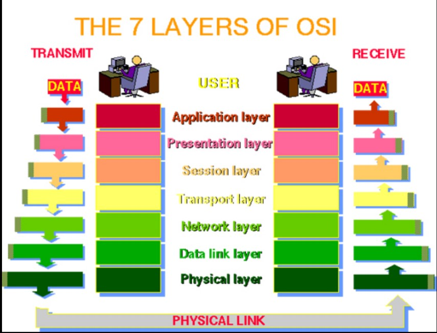

นี่คือเนื้อหาที่กลุ่มของพวกเราสนใจ

OSI (Open Systems Interconnection)
คือโมเดลที่ใช้ในการอธิบายและแบ่งส่วนการทำงานของระบบเครือข่ายคอมไว้เป็นชั้นๆ
Physical Layer
ชั้นที่ 1.): ชั้นฟิสิกส์เป็นชั้นที่รับผิดชั้นแรกของการสื่อสาร มันเกี่ยวกับการส่งข้อมูลในรูปแบบของสัญญาณดิจิทัลหรืออนาล็อกระหว่างอุปกรณ์ เช่น การส่งข้อมูลผ่านสายสัญญาณ, การเชื่อมต่อฮาร์ดแวร์ เป็นต้น
Data Link Layer
ชั้นที่ 2.): ชั้นนี้เกี่ยวกับการจัดการเฟรมข้อมูล ซึ่งเป็นการแบ่งข้อมูลเป็นชุดเล็กๆ และตรวจสอบข้อผิดพลาดในการส่งข้อมูล เช่น Ethernet
Network Layer
ชั้นที่ 3.): ชั้นเน็ตเวิร์กเป็นผู้รับผิดชั้นนี้ โดยมีหน้าที่การเปลี่ยนส่งข้อมูลจากโหนด (node) หนึ่งไปยังโหนดอื่น โดยใช้เส้นทางที่เหมาะสม ตัวอย่างเช่น IP (Internet Protocol)
ransport Layer
ชั้นที่ 4.): ชั้นควบคุมการสื่อสารระหว่างจุดปลายของการสื่อสาร มันรับผิดชั้นที่ให้บริการเชื่อมต่อและการควบคุมการส่งข้อมูล เช่น TCP (Transmission Control Protocol)
Session Layer
ชั้นที่ 5.): ชั้นนี้รับผิดชั้นการติดต่อและบริหารการเชื่อมต่อระหว่างอุปกรณ์ในเครือข่าย เช่นการเปิดและปิดเซสชัน (Session) และการจัดการการสื่อสาร
Presentation Layer
ชั้นที่ 6.): ชั้นนี้รับผิดชั้นการแปลงข้อมูลเพื่อให้สามารถอ่านและเข้าใจได้ระหว่างอุปกรณ์ที่ต่างกัน เช่นการเข้ารหัส (Encryption) และการบีบอัดข้อมูล (Compression)
Application Layer
ชั้นที่ 7.): ชั้นสุดท้ายเป็นชั้นแอพพลิเคชัน ที่มีบทบาทในการให้บริการแอพพลิเคชันและการเข้าถึงบริการที่เชื่อมต่อกับเครือข่าย เช่น HTTP (Hypertext Transfer Protocol) สำหรับการเรียกดูเว็บไซต์
โมเดล OSI ช่วยให้ผู้พัฒนาและผู้ดูแลระบบเครือข่ายเข้าใจและการทำงานของเครือข่ายได้ง่ายขึ้น และช่วยในการวิเคราะห์และแก้ปัญหาในเครือข่ายได้อย่างระเบียบและรวดเร็ว